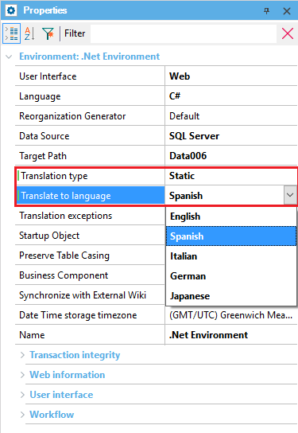
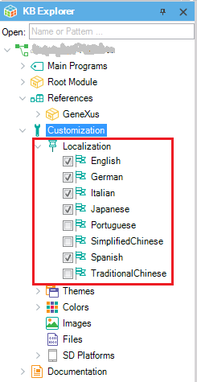

Sets the language you want to translate the Knowledge Base texts into (for example, label texts or texts inside quotes in rules, sources, etc.). It is only offered if the Environment Translation Type Property was previously set to Static. Scope Level: Environment Description
 Values One of the selected language(s) in the Application Localization node (under Customization) of the KB Explorer:  The offered languages to be selected are predefined; also, the developer can create a new Language object. Run-time/Design-timeThis property applies only at design-time. How to apply changesTo apply the corresponding changes when the property value is configured, execute a Rebuild All. See Also
|
| Backlinks |
| Application Localization |